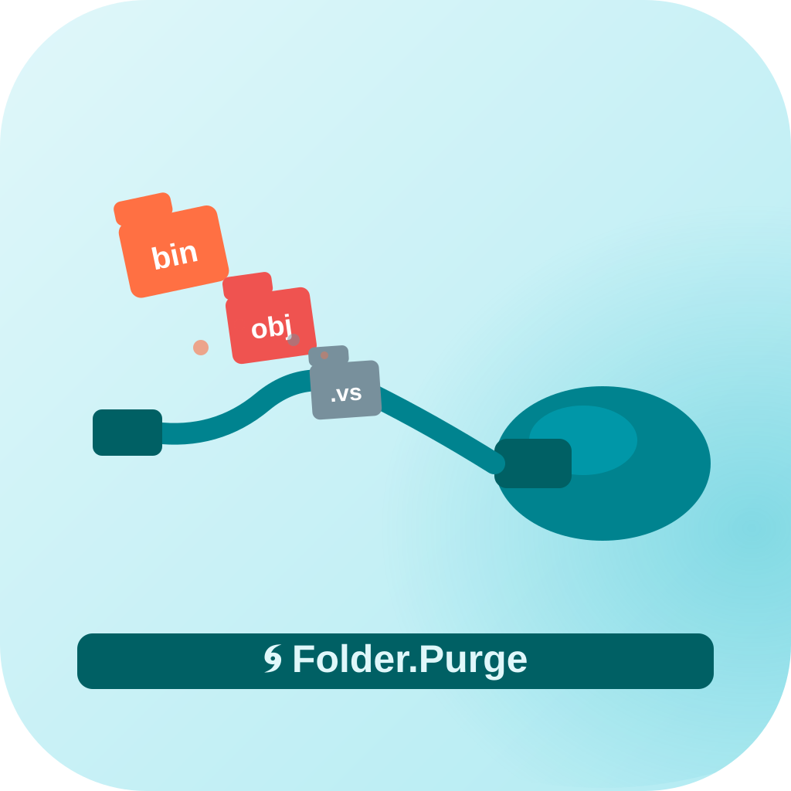
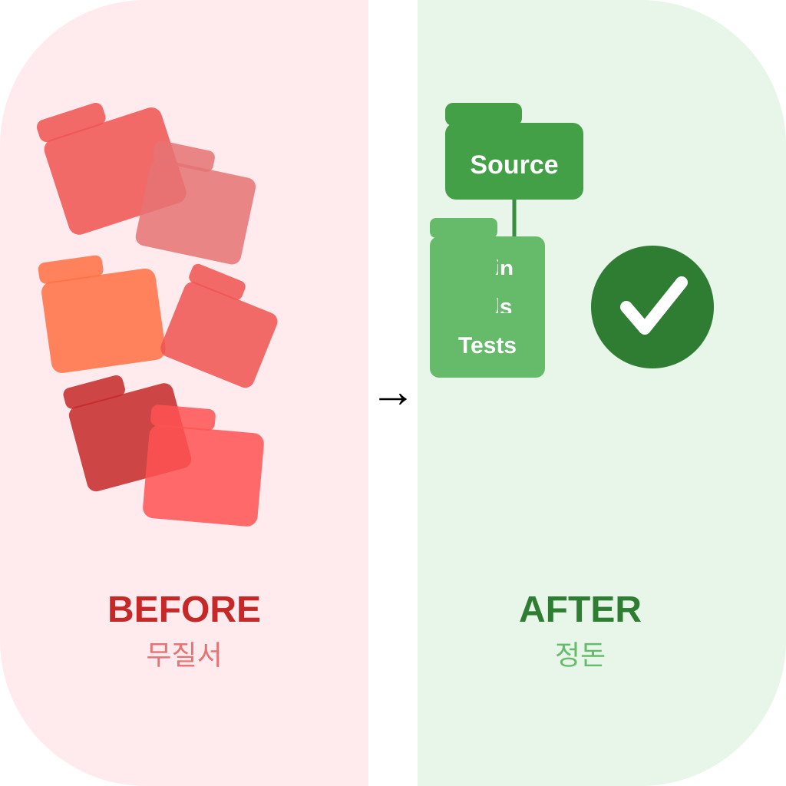
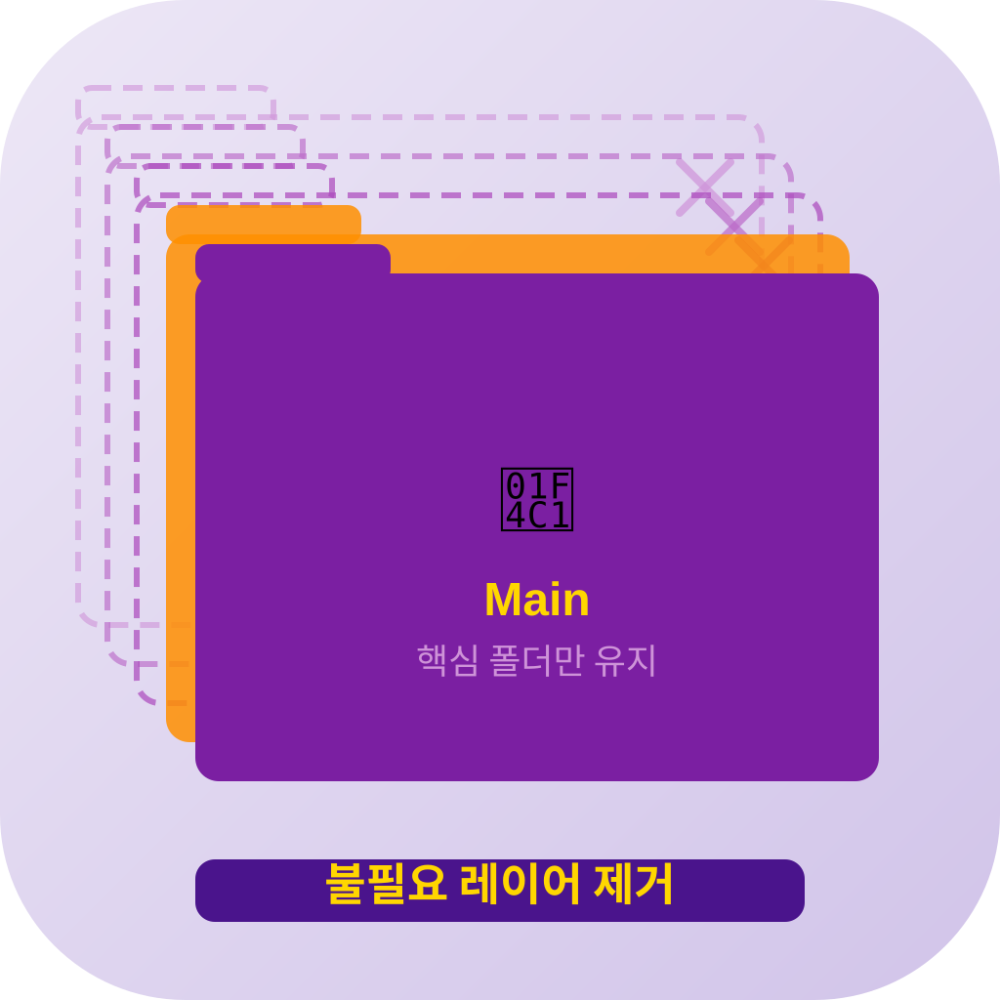

icon_04
폴더 위에 빗자루 오버레이
Purge=청소, 빗자루가 폴더를 정리
타입: metaphor / 패턴: 중앙 심볼

icon_05
진공청소기가 불필요 폴더를 흡입
자동 정리 기능을 청소기로 의인화
타입: metaphor / 패턴: 실루엣/캐릭터

icon_06
BEFORE(어지러운 폴더 더미) → AFTER(깔끔한 트리)
정리 전후 대비로 앱 효과 직관적 표현
타입: metaphor / 패턴: 공간/장면

icon_07
불필요한 레이어(점선)가 사라지고 핵심 폴더만 남음
불필요한 것을 제거해 핵심만 남기는 과정
타입: metaphor / 패턴: 레이어드